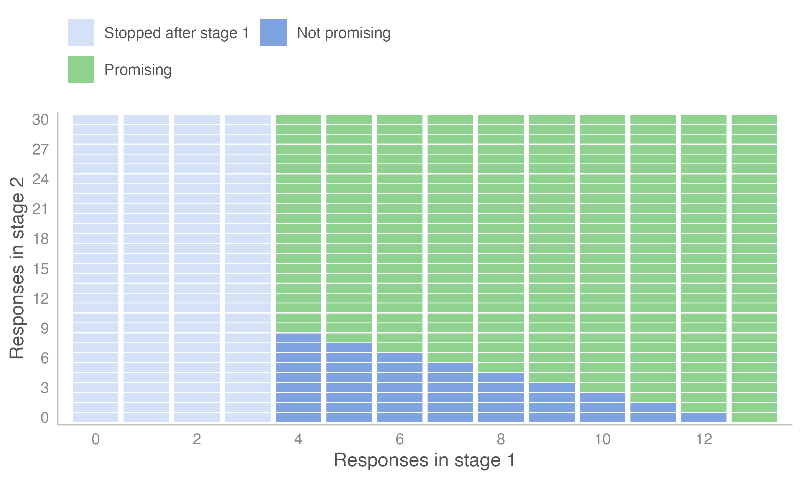
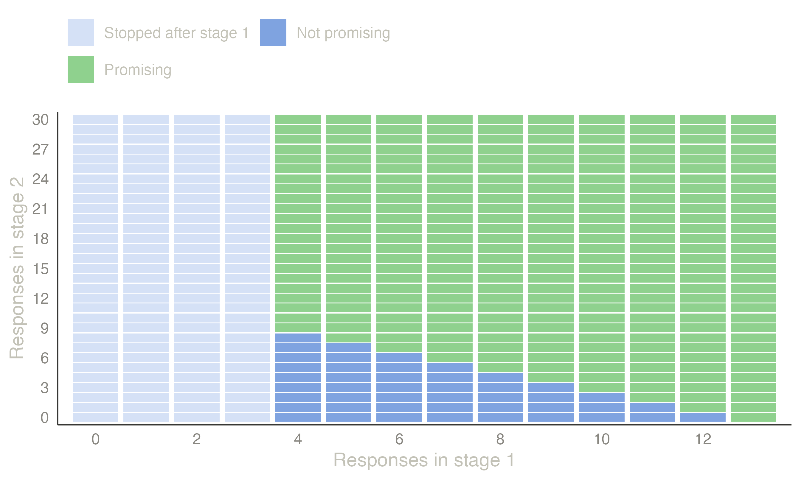
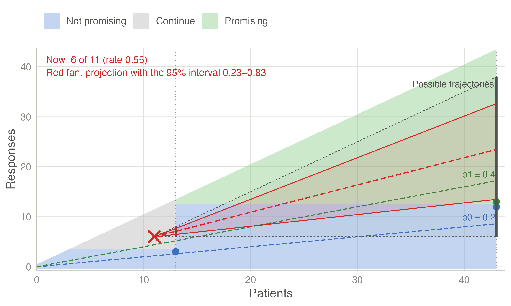
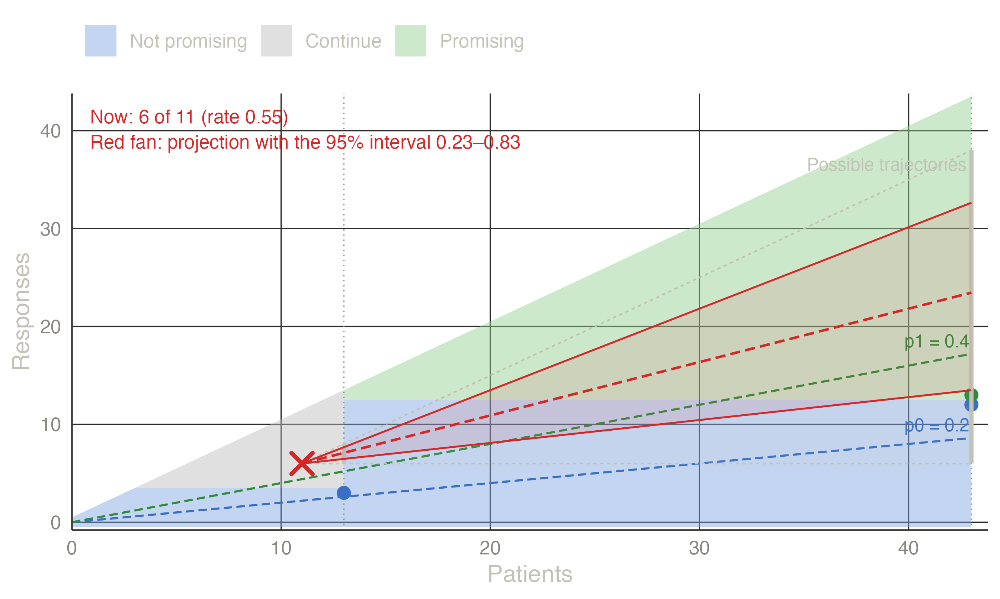

| Design | r1/n1 | r/n | EN under p0 | P(early stop) p0 | Attained α | Power |
|---|---|---|---|---|---|---|
| Simon optimal | 3/13 | 12/43 | 20.580 | 0.747 | 0.050 | 0.800 |
| Simon minimax | 4/18 | 10/33 | 22.255 | 0.716 | 0.046 | 0.801 |
| Single stage | — | 11/35 | 35.000 | 0.000 | 0.034 | 0.805 |
Phase II multistage designs
Single-arm go / no-go decisions on a response rate: Gehan, Simon’s optimal and minimax designs, admissible designs, Fleming’s multistage test, and Bayesian predictive monitoring.
The setting
A single-arm phase II study asks whether a new treatment’s response rate \(p\) is promising enough for a randomised phase III trial:
- \(H_0\!: p \le p_0\), an uninteresting rate;
- \(H_1\!: p \ge p_1\), a promising rate.
The data are binary and the samples small, so everything is computed exactly from the binomial distribution, and the designs stop early mainly to avoid giving an ineffective treatment to more patients.
Frequentist multistage designs
Gehan (1961). The earliest two-stage plan: stop after the first stage if no responses are seen; otherwise enrol enough patients to estimate \(p\) with a given precision (Gehan 1961).
Simon’s two-stage design. Enrol \(n_1\) patients and stop for futility if there are \(r_1\) or fewer responses. Otherwise enrol up to \(n\) in total, and declare the treatment promising if there are more than \(r\) responses. Writing \(X_1 \sim \mathrm{Bin}(n_1, p)\) and \(X_2 \sim \mathrm{Bin}(n - n_1, p)\),
\[ P(\text{declare promising} \mid p) = \sum_{x_1 = r_1 + 1}^{n_1} P(X_1 = x_1)\; P(X_2 > r - x_1), \]
\[ \mathrm{PET}(p) = P(X_1 \le r_1), \qquad E_p[N] = n_1 + \{1 - \mathrm{PET}(p)\}(n - n_1). \]
Among all designs with type I error \(\le \alpha\) at \(p_0\) and power \(\ge 1-\beta\) at \(p_1\):
- the optimal design minimises \(E_{p_0}[N]\);
- the minimax design minimises the maximum \(n\) (Simon 1989).
Admissible designs are the compromises between the two that minimise a weighted combination of \(E_{p_0}[N]\) and \(n\) (Jung et al. 2004). Fleming (1982) gave a multistage (more than two stages) procedure. Bryant and Day (1995) added toxicity as a second endpoint.
Inference after a two-stage design. The naive proportion and p-value ignore the early-stopping option. Koyama and Chen (2008) describe proper p-values and confidence intervals.
Bayesian designs
- Posterior monitoring (Thall and Simon 1994). Stop if the posterior probability that the new treatment beats the standard by a margin falls below a threshold.
- Predictive probability (Lee and Liu 2008). At each interim look, compute the probability that the trial will end with a positive posterior conclusion if it continues to its maximum size. With a Beta prior this is a finite sum of beta-binomial probabilities. Stop for futility if it is below \(\theta_L\), and for efficacy if it is above \(\theta_U\).
- BOP2 (Zhou et al. 2017). Calibrates posterior-probability boundaries so that the design has a specified type I error, and extends them to joint efficacy–toxicity endpoints.
As with any Bayesian rule, the frequentist operating characteristics of these designs are computed and reported (see Bayesian monitoring).
Example: a response rate of 20 % against 40 %
\(p_0 = 0.2\), \(p_1 = 0.4\), one-sided \(\alpha = 0.05\), power 80 %. The designs below were computed by the Phase II Multistage Design analysis; the Simon designs agree with clinfun::ph2simon.
The optimal design stops early three times out of four when the treatment is uninteresting, and needs about 21 patients on average instead of 35. The minimax design caps the trial at 33 patients.
Because phase II trials are small, every possible result can be drawn. The outcome map of the optimal design shows each combination of responses in stage 1 (of 13) and stage 2 (of 30), and the decision it leads to:


An unplanned look. Suppose 6 of the first 11 patients respond, two patients before the planned interim analysis. The Stopping boundaries plot places the current status in the design:


The triangle holds every trajectory still possible: from no further responses (horizontal) to a response in every patient (slope 1). The red fan projects the trial at the observed rate (0.55) and at the limits of its 95 % interval (0.23–0.83). Even at the lower limit, the projection ends at the final threshold of 13 responses. The outcome map shows the same status as a red box at 6 stage-1 responses. With two stage-1 patients left, only columns 6 to 8 can still be reached, and most of their final outcomes are promising.
The Analysis of observed data table puts numbers on the picture: the probability that the trial ends promising given the data so far. It is 0.99 if the true rate is p1 and 1.00 at the observed rate. It is still 0.46 if the true rate is the uninteresting p0: with 6 responses already in, the design needs only 7 more among the remaining 32 patients. An early run of responses carries a trial a long way, which is one more reason to interpret the final result with the exact, design-based inference below.
Analysing the trial. Suppose the optimal design runs to the end and 14 of 43 patients respond.
| Observed rate | UMVUE | p-value (H0: p ≤ 0.2) | 95% CI lower | 95% CI upper |
|---|---|---|---|---|
| 0.3256 | 0.3822 | 0.0268 | 0.1982 | 0.5433 |
The p-value and the exact interval use the ordering of Koyama and Chen (2008), which accounts for the stopping rule. With no first-stage stopping, they reduce to the binomial test and the Clopper–Pearson interval. The UMVUE is larger than the observed rate because the observed rate is biased downwards in this design: computed exactly over all possible outcomes, it averages 0.265 when the true rate is 0.30, whereas the UMVUE averages exactly 0.30.
A Bayesian alternative. A predictive-probability design (Lee and Liu 2008) with a Beta(0.2, 0.8) prior, at most 40 patients, looks after 10, 15, …, 40, and stops for futility when the predictive probability of a positive final analysis (\(P(p > 0.2 \mid \text{data}) > 0.95\)) falls below 5 %:
| Patients | Futility if responses ≤ | P(stop) p0 | P(stop) p1 |
|---|---|---|---|
| 10 | 1 | 0.376 | 0.046 |
| 15 | 2 | 0.099 | 0.009 |
| 20 | 4 | 0.197 | 0.025 |
| 25 | 5 | 0.047 | 0.005 |
| 30 | 7 | 0.096 | 0.013 |
| 35 | 9 | 0.072 | 0.017 |
| 40 | 12 | 0.113 | 0.884 |
Its frequentist type I error is 0.037 and its power 0.828, with 20.3 patients on average under \(p_0\). All these numbers are exact: they come from the binomial distribution, not from simulation.
TipIn jmsequential
Sequential → Phase II Multistage Design (version 0.1.0).
- Design: Simon two-stage (optimal, minimax or admissible with weight q), single-stage exact, Fleming multistage, Bayesian predictive probability, or Bayesian posterior probability.
- Settings: the rates p0 and p1, one-sided α and power; for Fleming, the cumulative sample sizes (or a number of stages); for the Bayesian designs, the prior, the looks and the thresholds θT, θL and θU.
- Analysis of observed data: enter the patients evaluated and their responses to get the decision, the estimates, the interval and the p-value, as above.
- Candidate Simon designs: a table of the best design for each maximum N, with the range of weights for which each is admissible.
- Outcome map: for two-stage designs, every combination of stage-1 and stage-2 responses coloured by the decision, as in Figure 1.
The example in jamovi
- Sequential → Phase II Multistage Design: the defaults are the example (Simon two-stage, optimal, p0 = 0.2, p1 = 0.4, one-sided α = 0.05, power 0.8).
- For the unplanned look, tick Observed data in the Analysis of observed data box and enter 11 Patients evaluated and 6 Responses.
- In Output, untick Operating characteristics plot and tick Outcome map, which then follows the table.
The Analysis of observed data table gives the decision (Not a planned analysis), the observed rate 0.545 with its 95 % interval 0.234–0.833, and the probability of ending promising: 0.465 at p0, 0.991 at p1 and 1.000 at the observed rate. Below it comes the outcome map, with the red box at 6 stage-1 responses (Figure 1). Stopping boundaries plot adds Figure 2.


References
Bryant, John, and Roger Day. 1995. “Incorporating Toxicity Considerations into the Design of Two-Stage Phase II Clinical Trials.” Biometrics 51 (4): 1372. https://doi.org/10.2307/2533268.
Fleming, Thomas R. 1982. “One-Sample Multiple Testing Procedure for Phase II Clinical Trials.” Biometrics 38 (1): 143. https://doi.org/10.2307/2530297.
Gehan, Edmund A. 1961. “The Determination of the Number of Patients Required in a Preliminary and a Follow-up Trial of a New Chemotherapeutic Agent.” Journal of Chronic Diseases 13 (4): 346–53. https://doi.org/10.1016/0021-9681(61)90060-1.
Jung, Sin‐Ho, Taiyeong Lee, KyungMann Kim, and Stephen L. George. 2004. “Admissible Two‐stage Designs for Phase II Cancer Clinical Trials.” Statistics in Medicine 23 (4): 561–69. https://doi.org/10.1002/sim.1600.
Koyama, Tatsuki, and Heidi Chen. 2008. “Proper Inference from Simon’s Two‐stage Designs.” Statistics in Medicine 27 (16): 3145–54. https://doi.org/10.1002/sim.3123.
Lee, J Jack, and Diane D Liu. 2008. “A Predictive Probability Design for Phase II Cancer Clinical Trials.” Clinical Trials 5 (2): 93–106. https://doi.org/10.1177/1740774508089279.
Simon, Richard. 1989. “Optimal Two-Stage Designs for Phase II Clinical Trials.” Controlled Clinical Trials 10 (1): 1–10. https://doi.org/10.1016/0197-2456(89)90015-9.
Thall, Peter F., and Richard Simon. 1994. “Practical Bayesian Guidelines for Phase IIB Clinical Trials.” Biometrics 50 (2): 337. https://doi.org/10.2307/2533377.
Zhou, Heng, J. Jack Lee, and Ying Yuan. 2017. “BOP2: Bayesian Optimal Design for Phase II Clinical Trials with Simple and Complex Endpoints.” Statistics in Medicine 36 (21): 3302–14. https://doi.org/10.1002/sim.7338.